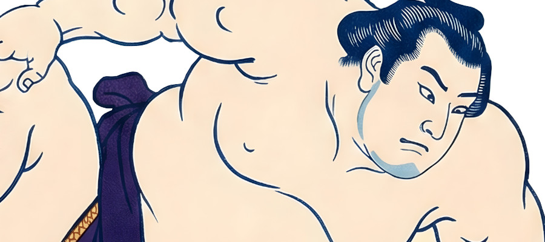
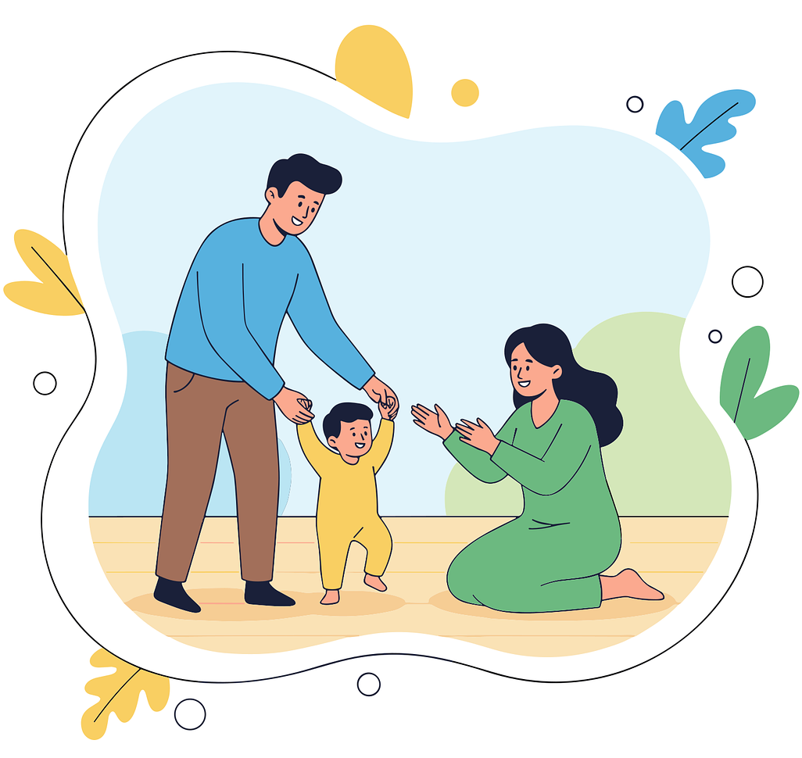
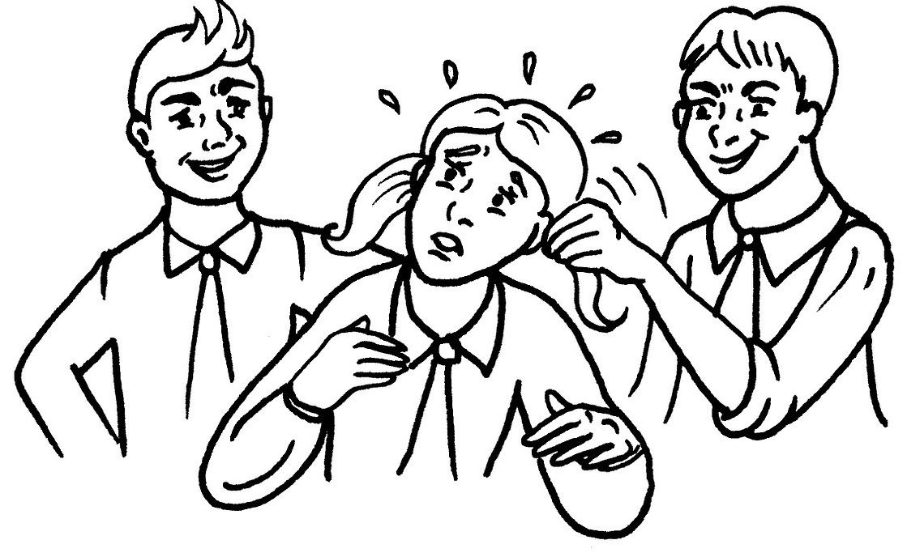
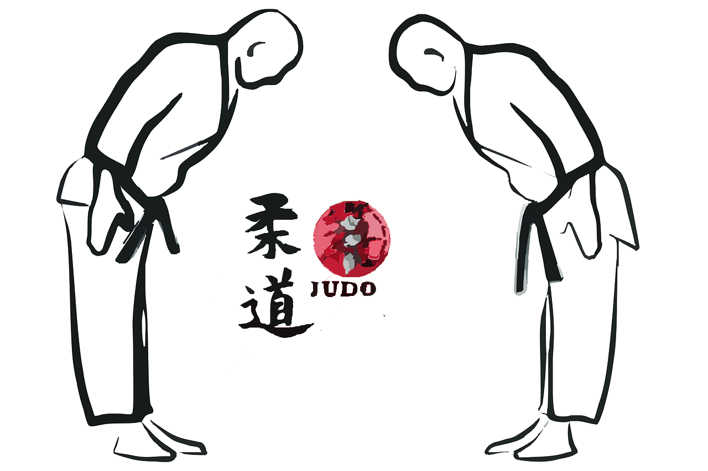
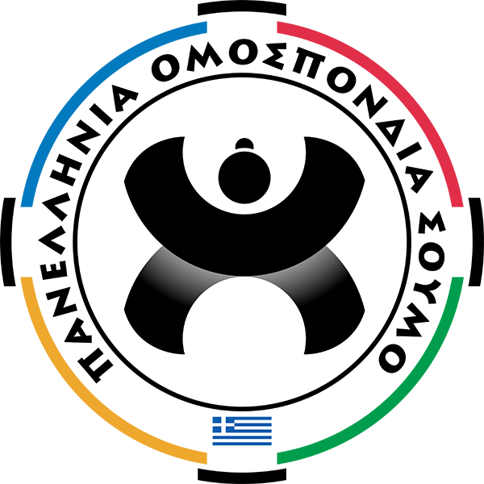
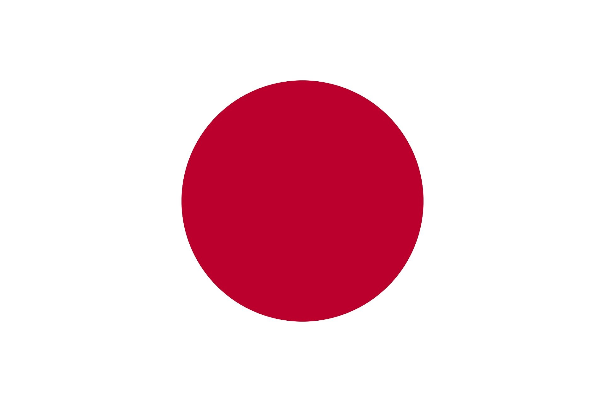
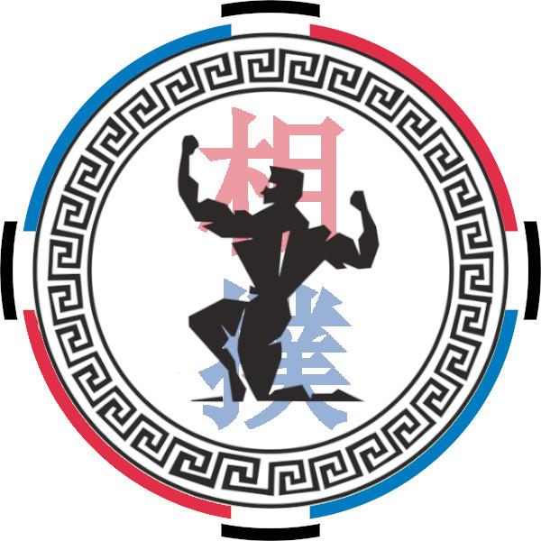

Αθλητικός Σύλλογος Εν Σώματι – Παραδοσιακή Ιαπωνική Πάλη
Κορυδαλλός • Νίκαια • Ρέντης
Εκπαίδευση δύναμης, ισορροπίας και χαρακτήρα.
Μαθήματα για παιδιά και ενήλικες.

Το Sumo είναι το εθνικό άθλημα (kokugi) της Ιαπωνίας. Μια πολεμική τέχνη 1500 ετών, η αρχαιότερη του κόσμου μαζί με το Παγκράτιο. Είναι κατά βάσιν παλαιστική μορφή αυτοάμυνας. Οι αθλούμενοι μαθαίνουν να σπρώχνουν και να τραβούν για να ρίξουν. Ως άθλημα επαφής δεν είναι άθλημα βίας. Απαιτεί ισορροπία, έκρηξη, δυνατά πόδια, στήθος και πλάτη, Θεωρείται από τα ασφαλέστερα αθλήματα και είναι πολύ διασκεδαστικό για τα παιδιά.
Η κινητική μάθηση εξετάζει τη διεργασία απόκτησης μιας ικανότητας για την εκτέλεση ενεργειών που απαιτούν επιδέξιες κινήσεις. Είναι άμεσο αποτέλεσμα της πρακτικής εξάσκησης και δεν οφείλεται στην ωρίμανση ή σε αλλαγές του οργανισμού. Δεν μπορεί να παρατηρηθεί άμεσα. Καταλήγει σε σχετικά μόνιμες αλλαγές στη δυνατότητα εκτέλεσης επιδέξιων συμπεριφορών. Με συγκεκριμένες ασκήσεις για παιδιά 4-5 ετών ως 12 ετών πετυχαίνουμε την υγιή κινητική ανάπτυξη, την ανάπτυξη του νευρικού συστήματος, του μυϊκού συστήματος και των αρθρώσεων. Η ικανότητα μετατρέπεται σε δεξιότητα και το παιδί μαθαίνει να κινείται σωστά (συντονισμός, συγχρονισμός μυϊκών ομάδων, κιναίσθηση, χωρο-αντίληψη κτλ.) Η κινητική μάθηση είναι συνδεδεμένη με την ανάπτυξη του κεντρικού νευρικού συστήματος, την παρεγκεφαλίδα (περιλαμβάνει το 50% των νευρώνων του εγκεφάλου) και τα γάγγλια.


Η διαχείριση καταστάσεων βίας γίνεται αποτελεσματικά όταν ο αμυνόμενος έχει γνώση της βίας και των τρόπων αντίδρασης σε αυτήν. Στη σχολή μας, η αυτοάμυνα διδάσκεται με σεβασμό και ασφάλεια, εστιάζοντας στην πρόληψη, την εκτίμηση κινδύνου και την ανάπτυξη πρακτικών δεξιοτήτων για την προστασία του εαυτού. Τα παιδιά μαθαίνουν να αναγνωρίζουν επικίνδυνες καταστάσεις, να διατηρούν την ψυχραιμία τους και να εφαρμόζουν τεχνικές που ενισχύουν την αυτοπεποίθηση και την ασφάλειά τους, χωρίς να κινδυνεύουν οι ίδιοι ή οι άλλοι γύρω τους.
Ως σχολή πολεμικών τεχνών οργανώνουμε σεμινάρια αυτοπροστασίας και πολεμικών τεχνών για την εκπαίδευση των πολιτών. Τα σεμινάρια αυτοπροστασίας λόγω της διαχείρισης πραγματικών καταστάσεων βίας είναι ανοικτά μόνο σε συνειδητοποιημένους εφήβους 15 ετών και ενήλικες. Τα σεμινάρια Judo (κυρίως έδαφος), Karate-do, Chap Koon Do, Tae Kwon Do, Kobudo είναι ανοικτά σε όλους. Επίσης διεξάγονται σεμινάρια διαιτησίας SUMO σε συνεργασία με την Πανελλήνια Ομοσπονδία Σούμο. Τα σεμινάρια οργανώνονται σε μηνιαία βάση Σάββατο ή Κυριακή.

Ο Αθλητικός Σύλλογος Εν Σώματι είναι εγγεγραμμένος στην Πανελλήνια Ομοσπονδία Σούμο και στην Γενική Γραμματεία Αθλητισμού. Διαθέτει αθλητική αναγνώριση για το άθλημα ΣΟΥΜΟ. Ο προπονητής είναι πτυχιούχος της Γενικής Γραμματείας Αθλητισμού και έχει άδεια ασκήσεως επαγγέλματος προπονητή με ΑΜ ΑΗ449.
Το SUMO είναι άθλημα σε καθεστώς ανάπτυξης. Το Μάρτιο οι προπονήσεις είναι δωρεάν για να διαπιστώσετε αν σας ταιριάζει.



"Δεν υπάρχει πιο ισχυρό μέταλλο από τον ελεύθερο άνθρωπο."